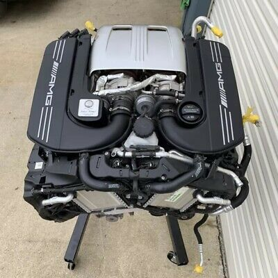
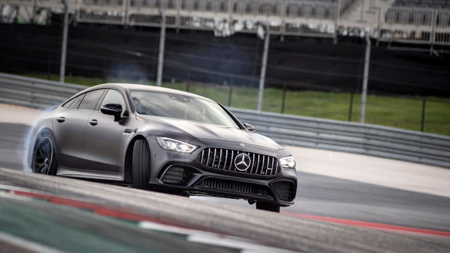

Mercedes-AMG GT 63 S 4MATIC+
 <<<<<<< HEAD
<<<<<<< HEAD
The GT 63S is the top of the line variant of the GT 4-Door and features the same 4.0L M177 twin-turbocharged V8 engine as in the GT 63, but receives further tuning to produce 630 hp and 900 N⋅m of torque.
The GT 63S will reportedly accelerate from 0–100 km/h in 3.2 seconds and attain a top speed of 315 km/h as tested by the manufacturer. Auto Bild tested 0–100 km/h in 3.0 seconds, 0–160 km/h in 6.6 seconds and 0–200 km/h in 10.2 seconds.
Additionally, all of the equipment and features from the GT 63, as well as the selectable "Drift Mode", which directs power solely to the rear wheels, comes as standard on the GT 63S as well.
======= >>>>>>> f75547f3665b73b3dff616c7838ee1c92c900de0 >>>>>>> 73f1f52e2ae4f04ec5e3e54b3ba28c33266eed33